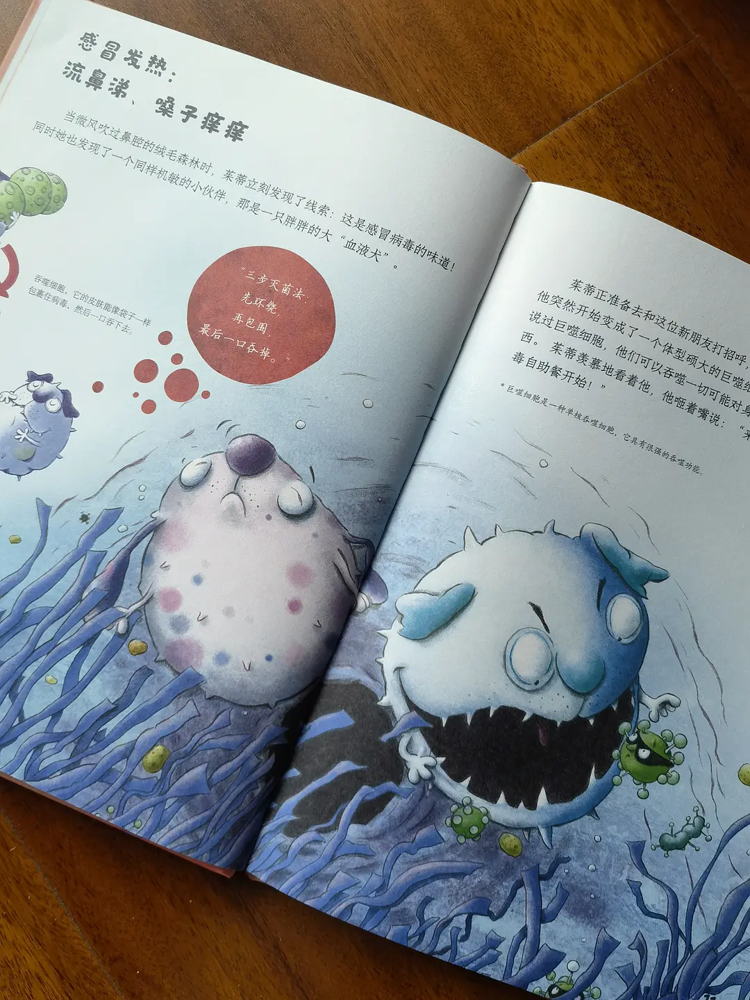

和白细胞一起探秘免疫世界
孩子们在成长过程中，难免会遭遇生病受伤，面对身体的不适，他们往往充满恐惧与好奇。为什么大多数时候我们的身体能保持健康？当感冒发烧、腹泻肚子疼或者受伤时，你的身体里到底发生了什么？这些问题常常困扰着孩子们。 带着这些疑问，来《生病时你的身体里发生了什么》，到茱蒂的奇妙世界一探究竟吧，和孩子们一起了解身体内部世界，揭开疾病与身体免疫系统的神秘面纱。 这本书的主角是两只可爱的白细胞，中性粒细胞朱蒂和巨噬细胞吞吞。它们就像身体里的小卫士，日夜守护着我们的健康。在书中，身体内部变成了一个奇妙的世界，有潺潺流淌的 “河流”（血液），茂密的 “树林”（组织），还有一望无际的 “大地”（各种器官）。孩子们将跟随朱蒂和吞吞的脚步，潜入身体内部，巡视神奇的免疫系统。在这里，他们会认识许多新朋友，淋巴细胞、血小板等细胞和有益细菌，同时也会见识到冠状病毒、流感病毒、沙门氏菌有害病毒和细菌的真面目。 作者卡佳・路德维希拥有医生和科普作家双重身份，用专业的医学知识和生动的讲解方式，将复杂的人体生理知识转化为孩子们易于理解的内容。书中描绘了孩子们日常生活中常见的伤病，可爱的白细胞们在感冒、腹泻、瘙痒、骨折等这些不同的场景中是如何工作，还有各种实用的生活小贴士教你如何应对，养成健康的生活习惯。 孩子们在阅读过程中，能感受到身体自身免疫系统强大的修复能力，还能学到不少生物和医学知识。 想要孩子能更好地了解自己的身体，战胜对疾病的恐惧，学会照顾自己，快来和茱蒂、吞吞一起探索身体的奥秘吧！


有关键情节透露
> 我来回应